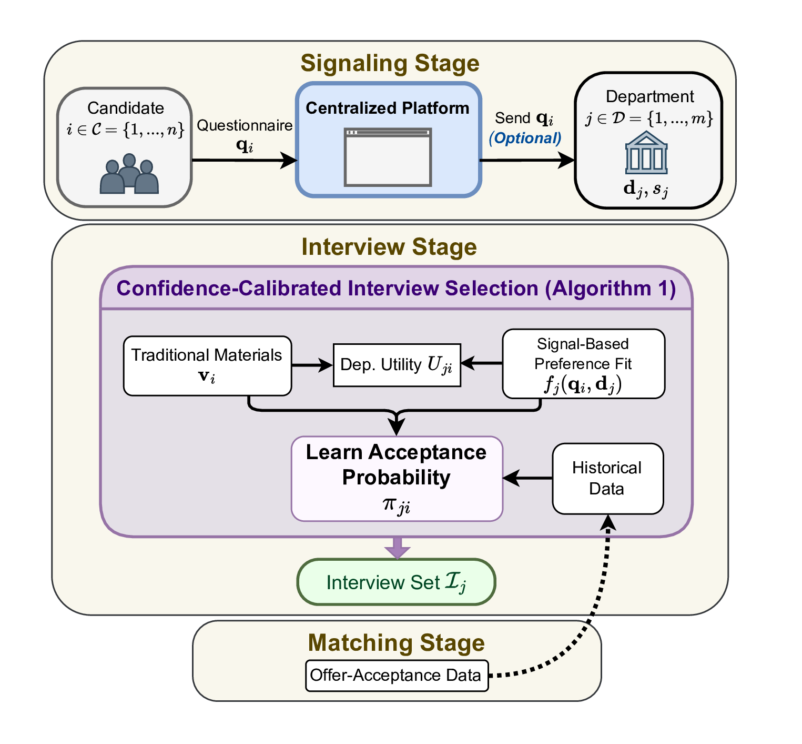
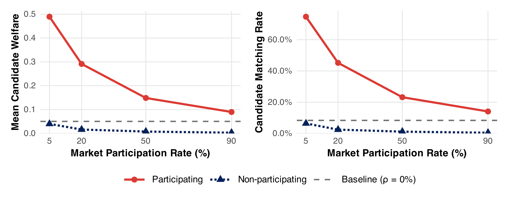
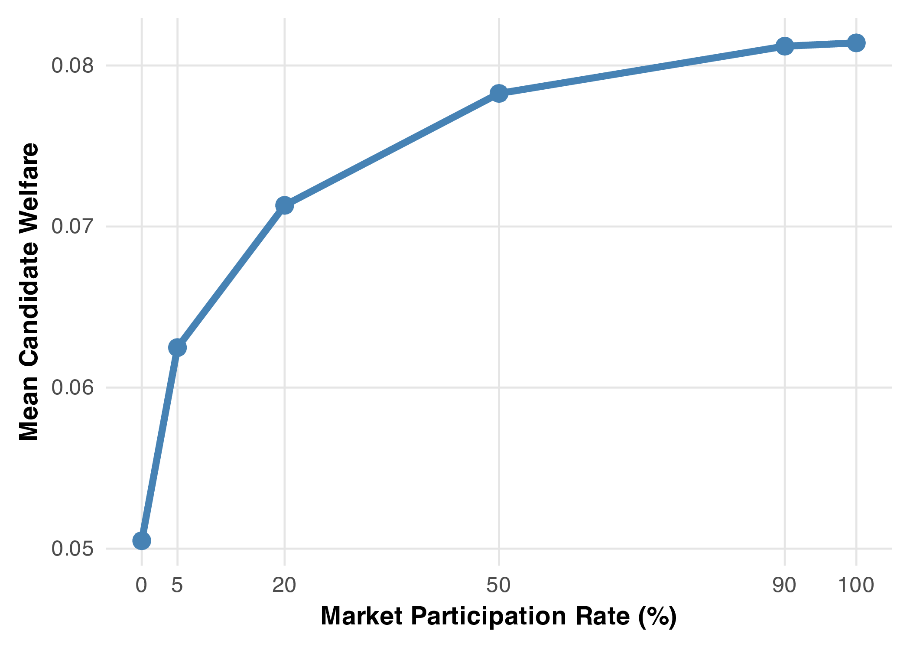
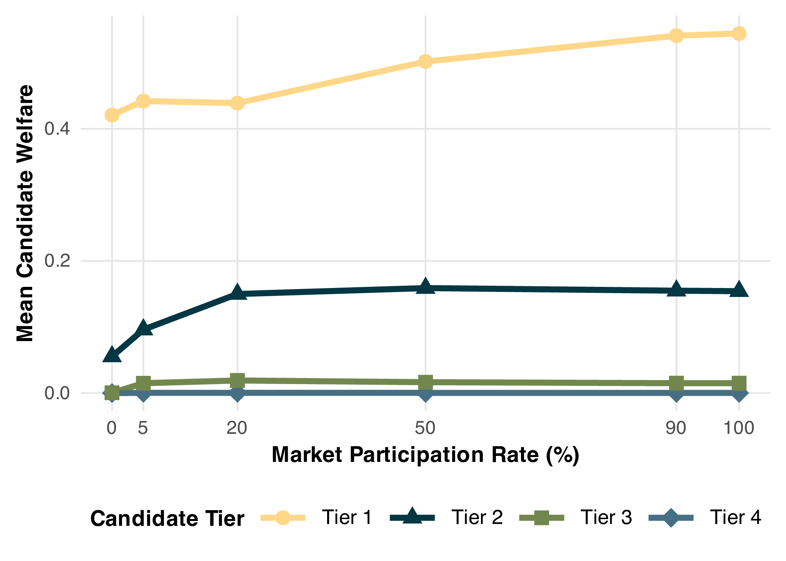
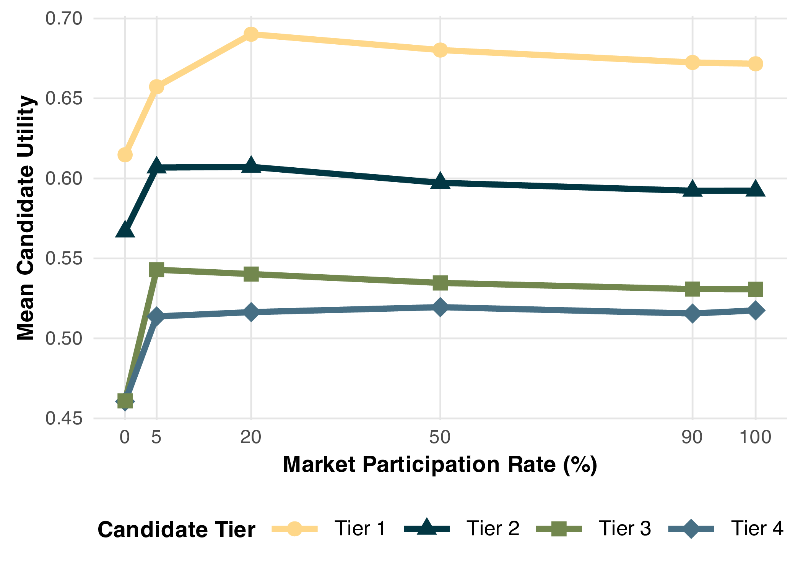
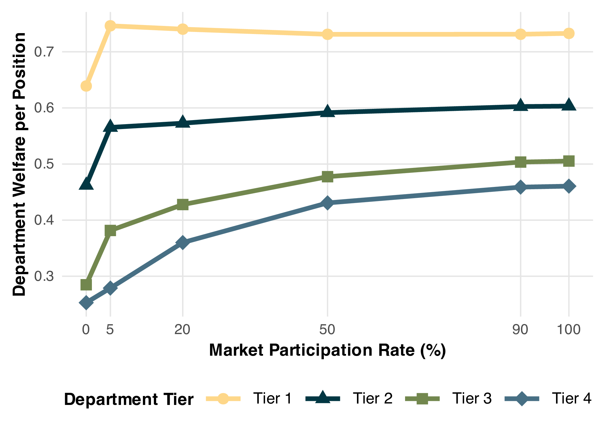
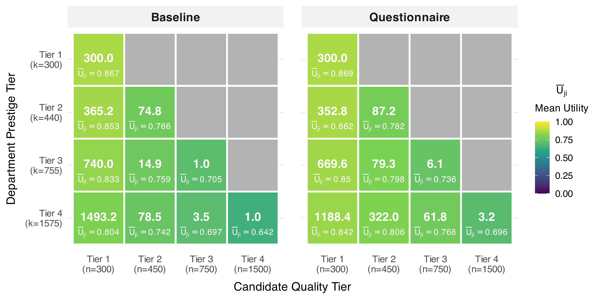
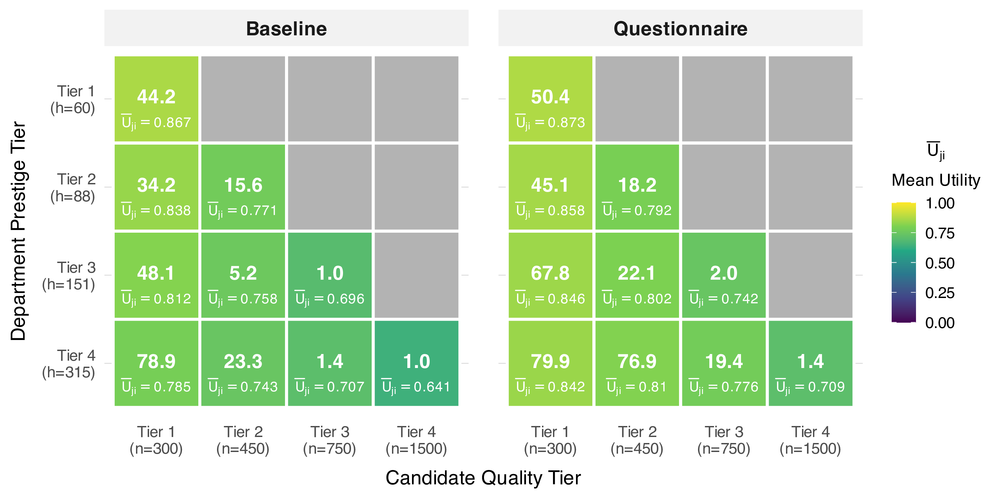
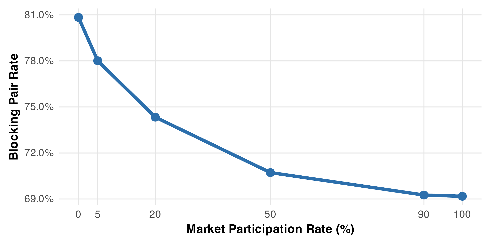

Overview
The academic job market for new statisticians faces substantial inefficiencies: departments struggle to identify genuinely interested candidates among large applicant pools, while candidates have limited ability to communicate preferences in a credible way. This paper develops a novel market-design framework that addresses these challenges through structured preference signaling.
Welfare Gains
Aggregate candidate welfare increases substantially under full participation
More Hires
Improved matching efficiency yields more candidates successfully hired and better fill rates for positions
Better Matches
Both candidates and departments benefit from preference-aligned hiring
The Problem
Market Inefficiencies
- Congestion: A small subset of candidates receives multiple offers while many departments fail to hire
- Information asymmetry: Departments cannot distinguish genuine interest from strategic applications
- Coordination failure: Well-suited candidates and departments fail to match
- Wasted resources: Interview slots allocated to candidates unlikely to accept offers
The Proposed Mechanism
We propose a three-stage framework that introduces a centralized signaling mechanism through a standardized questionnaire. This enables candidates to communicate structured preferences over job characteristics while maintaining credibility through scarcity.

Figure 1: Overview of the academic job market design with signaling. Candidates submit a standardized questionnaire in the signaling stage, departments use it in the interview selection stage (Algorithm 1).
Signaling Stage
Candidates complete a single standardized questionnaire expressing preferences over:
- Geographic location and setting
- Compensation and resources
- Teaching load and mentoring
- Research environment
Candidates choose which departments receive their questionnaire alongside traditional application materials.
Interview Stage
Departments use a confidence-calibrated selection procedure that:
- Combines questionnaire signals with traditional materials
- Estimates candidate-specific acceptance probabilities
- Accounts for estimation uncertainty using pairwise comparisons
- Provides joint ranking guarantees
Matching Stage
Standard academic hiring practices:
- Departments extend offers to selected candidates
- Candidates choose among available offers
- Converges to stable matching as information improves
Technical Innovation
The confidence-calibrated interview selection procedure addresses ranking under uncertainty by using simultaneous pairwise comparisons. Unlike point-sorting (which ignores uncertainty) or marginal confidence bounds (which lack joint guarantees), our approach ensures that the interview set contains all truly top-k candidates with high probability.
Key Results
Theoretical Guarantees
- Disclosure dominance: Universal disclosure is a dominant strategy—each candidate maximizes expected payoff by sharing the questionnaire with all departments, regardless of other candidates' actions
- Approximate incentive compatibility: The gain from misreporting vanishes under market competition, so truthful participation is approximately optimal
- Welfare gains: Aggregate candidate welfare is nondecreasing in the participation rate; departments benefit from more informative questionnaires
- Stability: As the questionnaire becomes sufficiently informative, the induced matching converges to a stable outcome with no blocking pairs
Simulation Results
We construct a dataset by integrating the 2022 U.S. News rankings of graduate programs in Statistics (peer assessment scores and geographic locations for 101 departments) with the College Scorecard (institutional attributes including locale type, size, and control). Together, these sources yield structured information about each department—geographic setting, program reputation, and institutional characteristics—that captures the essential features shaping hiring decisions and candidate preferences in the academic statistics job market.
Simulation Design:
Using this integrated dataset as an empirical scaffold, we simulate a multi-year academic job market with 300 candidates per year over a 10-year horizon, with departments partitioned into four prestige tiers based on their U.S. News rankings: Tier 1 (top 10), Tier 2 (11–25), Tier 3 (26–50), and Tier 4 (51–101).
Key Findings:
- Substantial increase in aggregate candidate welfare
- Increased number of successful hires across the market
- Match quality improves across all candidate tiers
- Lower-prestige departments benefit disproportionately
- Substantial improvements in position fill rates across all department tiers
Simulation Results

Figure 2: Candidate outcomes by participation status. Left: Mean welfare. Right: Matching rate. Dashed gray lines denote the baseline (ρ=0%).


Figure 3: Mean candidate welfare across all candidates, by participation rate ρ. (a) Aggregate. (b) Stratified by candidate quality tier.


Figure 4: Market outcomes by tier and participation rate ρ. (a) Mean candidate utility among matched candidates, by quality tier. (b) Department welfare per hiring position, by prestige tier.

Figure 5: Interview allocation by department and candidate tier. Cell shading and values show mean department utility and interview counts. Left: Baseline (ρ=0%). Right: Questionnaire (ρ=100%).

Figure 6: Hiring distribution by department and candidate tier. Cell shading and values show mean department utility and hire counts. Left: Baseline (ρ=0%). Right: Questionnaire (ρ=100%).

Figure 7: Blocking pair rate by participation rate ρ, measured as the number of blocking pairs divided by the total number of shortlist-eligible candidate–department pairs.
The Standardized Questionnaire
The standardized questionnaire elicits interpretable preference information that can be matched against department characteristics. Questions may span the following categories:
Geographic & Location
- Preferred geographic setting (urban/suburban/rural)
- Regional preferences (Northeast, Southeast, etc.)
- Airport proximity importance
- Cost of living considerations
- Partner/spouse hiring assistance needs
Compensation & Resources
- Minimum salary expectations
- Research startup funding needs
- Summer salary support preferences
Teaching & Mentoring
- Preferred teaching load
- Course type preferences (graduate/undergraduate)
- Faculty mentoring program importance
Research Environment
- Departmental research culture preferences
- Publication venue alignment
- PhD-to-faculty ratio preferences
- Medical school proximity importance
Design Principles:
- Single submission constraint preserves credibility
- Standardized format enables comparable evaluation across departments
- Continuous alignment scores for every department simultaneously
- No department-specific tailoring prevents strategic gaming
Paper & Resources
Citation
@article{academicmarket2026,
title={A Statistical Market-Design Framework for the Academic Job Market},
author={Kaazempur-Mofrad, Ali and Dai, Xiaowu and He, Xuming},
year={2026}
}